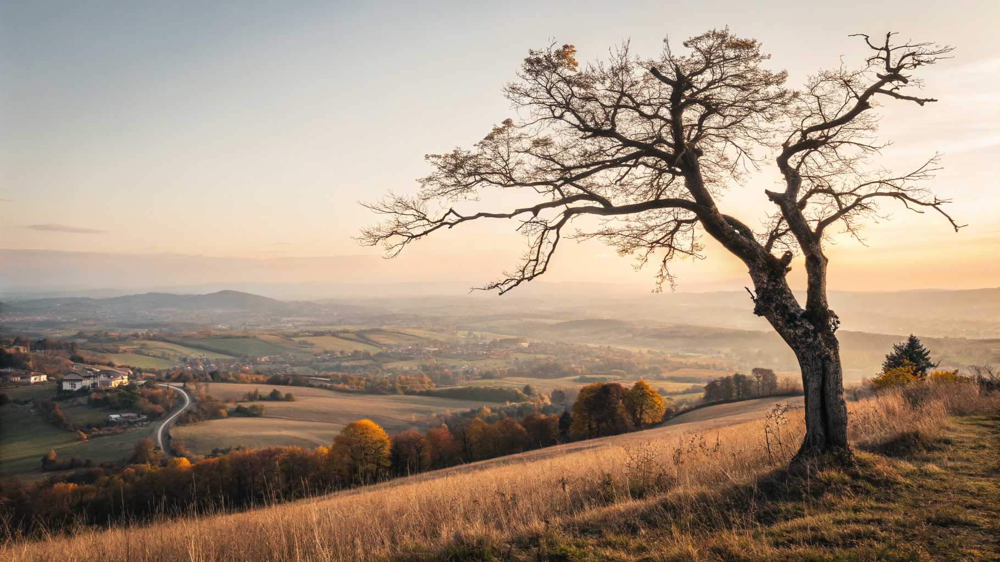
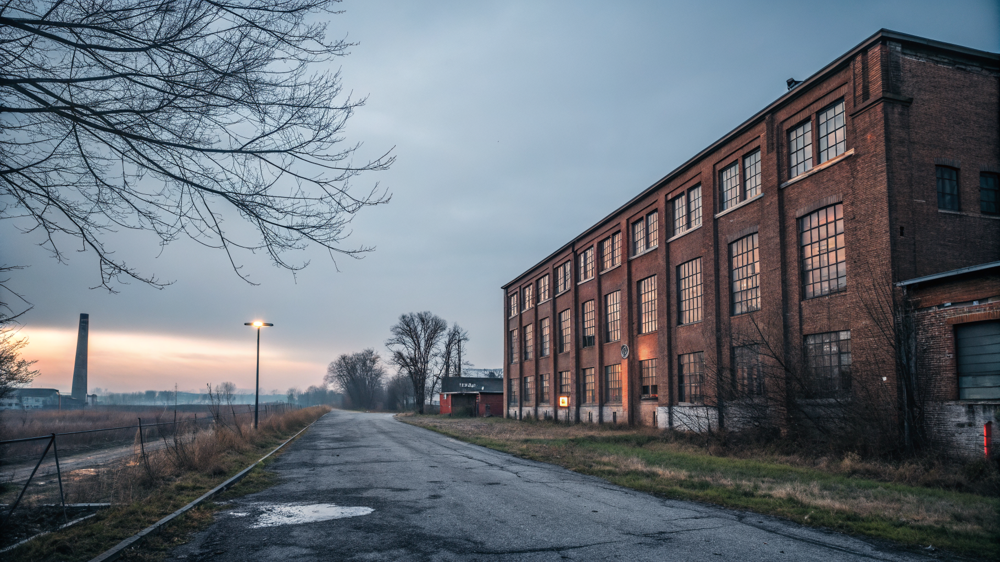
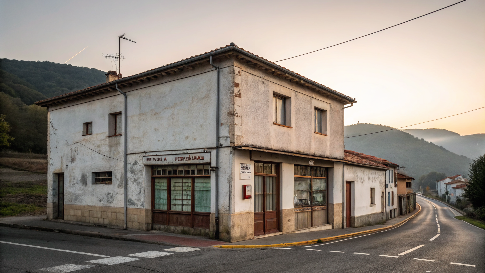
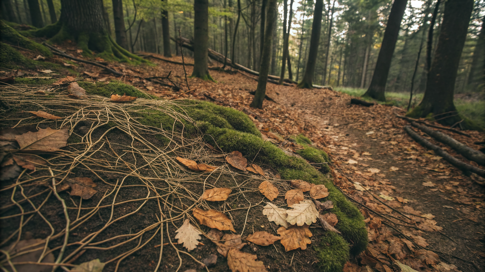
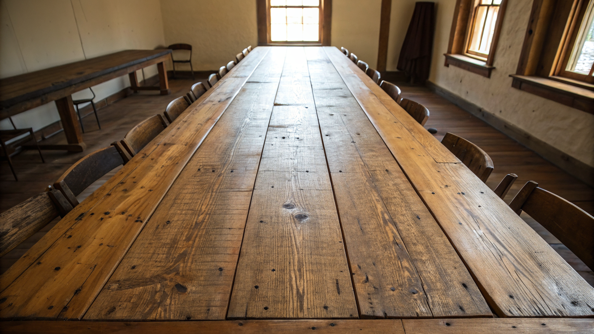
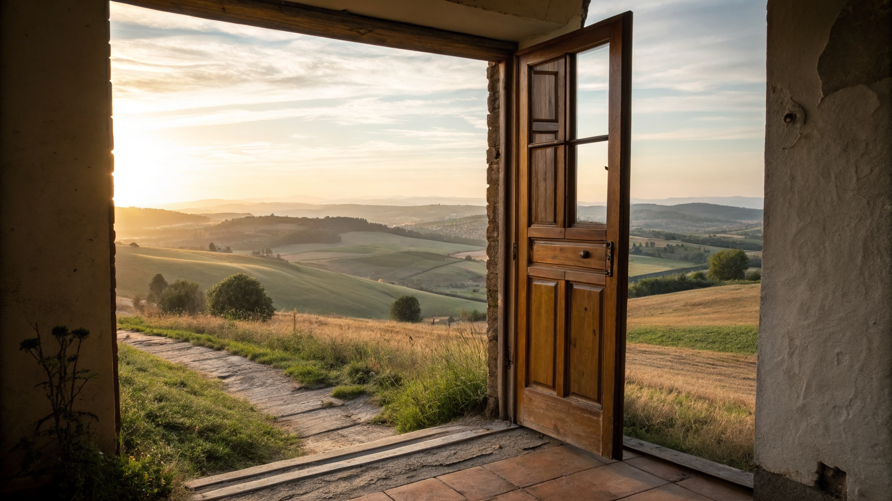

Sage Harper · Catawba Care Network
2026-05-20

Catawba County, North Carolina.
Twenty years in telecommunications gave us an architecture lens. We're running the first deployment of this substrate here. Months in, not years.

Cleveland Evergreen: $5.8M day-one capital stack. Three CEOs in year one. ~320 jobs vs original projection of thousands.
Cooperation Jackson: founding mayor died 8 months in. $3M city funding collapsed.
Mondragón: founding industrial co-op went bankrupt in 2013. €1.1B in debt.
Every bioregion is different. Different ecological ground. Different people. Different conditions that either allow or stifle bioregionalism in that specific place.
There isn't one answer. There are many valid responses.

Not a platform. Not a methodology to import. A living map — who's doing what work, what's been tried, what's emerging, what failed and why. Fed by the people doing the work. Open-source. Forkable.
Like mycelium — signals between work that looks unrelated above ground.
Where this bioregion is ready, where it's resistant, where it's ripe.
Themes that are actually rising — not what we hoped would rise. The handful of people whose participation tips a project into traction. Work the bioregion has tried before and bucked against — and why. Stress on the people carrying it. Readiness gathering for things no one has named yet.
Conditions are knowable. The substrate makes them visible.

The activist finds the three others already working her theme — and joins instead of starting alone. The ED leaves with the work intact, because her successor inherits the live context.
The co-op opens where neighbors already gather, not where the storefront is cheap. The organizer builds on what's actually rising here — and stops pouring energy into what the bioregion keeps refusing.
Each carries less. Each sees more. Each lasts longer. The bioregion accelerates because they do.
Member-owned. Stewarded, not extracted.
The substrate is owned by the people who feed it. Members shape what the tool surfaces. Surplus stays with the work. When another bioregion forks it, they bring their own conditions — not our solutions.
Conditions can't be exported. Discipline can.

If you identify as a bioregional steward — the work we just described is the work you're already doing in your place. We're building these tools to support your mission.
A weekly working group is forming. Light commitment. Real practice. Reach out.